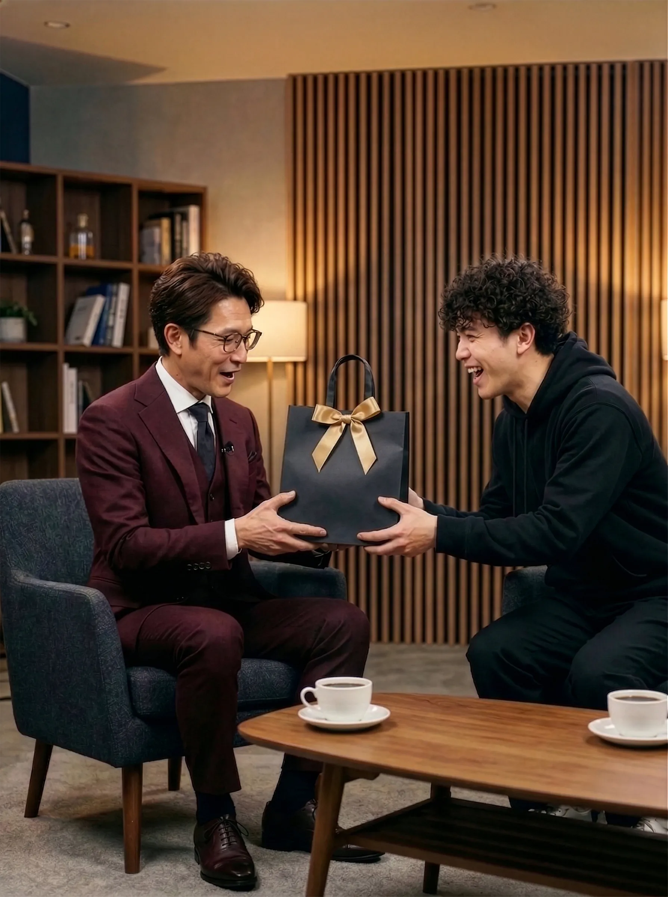
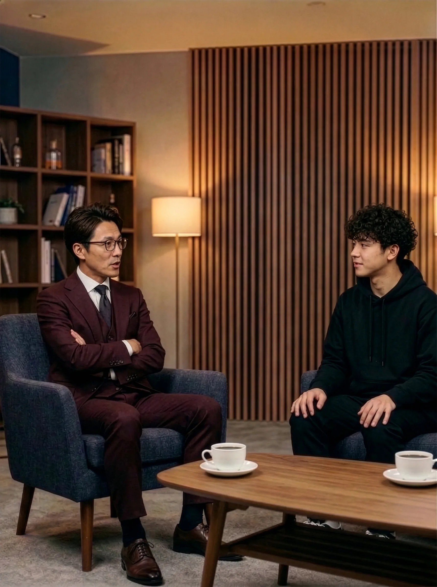

Special Interview / ARCHIVE
光の粒子を、掌に。――写真家・鳴海朔が語る『Luminar 85mm』の呪縛と真理
Interviewer: 星野 悠 (Hoshino Yu)
Place: 鳴海写真事務所
【記事公開日：2016年 4月15日(『YOIMI Vision』Vol.34)】
※本記事はアーカイブです。刈谷さんへ。内容を確認し、誤字脱字などあれば修正しておいてください。公開前にこの文章を消すのを忘れずに！
[星野 悠]
先生、本日はよろしくお願いします！ 先生のアトリエ、いつ来てもコーヒーの良い香りがして落ち着きますね。今日は先生の長年の相棒とも言えるレンズ、『Luminar 85mm F1.4』についてたっぷり語っていただきますよ！
[鳴海 朔]
ははは、お手柔らかに頼むよ、悠君。相棒なんて大げさなものじゃないけど、まあ、これがないと私のポートレート撮影は始まらないからね。コーヒー、おかわり淹れようか？
[星野]
あ、ありがとうございます！ ……そうだ先生、少し遅くなってしまいましたが、これ受け取ってください。先月の6日、お誕生日でしたよね。ささやかですが、僕からのお祝いです。

[ 写真：星野(右)からプレゼントを受け取る鳴海(左) ]
[鳴海]
おや、わざわざ気を遣わせてしまってすまないね。開けてもいいかい？ ……おお、これは珍しい銘柄のコーヒー豆じゃないか。
[星野]
はい！ 先生はラテよりもブラック派で、コーヒーに砂糖は絶対に入れないって仰っていたので。酸味が少なくて、ストレートで飲むのにぴったりの深煎り豆を専門店で選んできたんです。
[鳴海]
素晴らしい。私の好みを完璧に把握しているね。ありがとう。さっそくこの後、淹れさせてもらうよ。
[星野]
喜んでもらえてよかったです！ ……それにしても、先生の作品は本当にすべてこのオールドレンズで撮られていますよね。最近出た『ASTRAL』の新型なんて、オートフォーカスも爆速で、収差もゼロの完璧なレンズですよ？ 正直、最新機材には興味ないんですか？
[鳴海]
いやいや、とんでもない！ ASTRALの新作は本当に素晴らしい技術の結晶だと思うよ。この前ヨイミカメラさんで少し触らせてもらったけど、あの解像度には心底感動しちゃったな。ただ……私には少し『優等生』すぎるというか、完璧すぎるんだよね。

[ 写真：愛用のLuminarを傍らに、最新機材について語る ]
[星野]
優等生すぎるとダメなんですか？
[鳴海]
ダメじゃないさ。ただ、私は人間を撮るのが好きだからね。人もレンズも、少し不器用だったり、欠点がある方が愛嬌があって魅力的だと思わないかい？ Luminarは逆光だとすぐに暴れて変なフレアが出るけど、「おっ、今日は機嫌が悪いな。じゃあこうやって光を当ててみようか」なんて思いながら、光と対話してコントロールするのが楽しくて仕方ないんだよ。
[星野]
なるほど、「光との対話」ですか！ 先生の温かい写真の秘密が少し分かった気がします。……だからって、撮影現場にLuminar 85mmを付けたカメラ1台しか持っていかないのは、アシスタントとしてはいつもヒヤヒヤするんですが（笑）。せめて予備のレンズくらい持っていきましょうよ！
[鳴海]
ごめんごめん、いつも心配かけて（笑）。でも、予備があると「あっちのレンズの方が綺麗に撮れるかな」って余計な迷いが出ちゃう不器用な性分でね。現場には絶対にこれ一本しか持ち込まないって決めてるんだ。レンズを付け替える時間を、目の前のモデルさんと笑い合う時間に使いたいからね。
[星野]
もう、先生らしいなあ。僕もいつか、そんな風に言い切れるカメラマンになりたいです！
[鳴海]
悠君ならきっとなれるさ。今度、一緒にオールドレンズ探しに行こうか。終わったら美味しいご飯でも奢るよ。